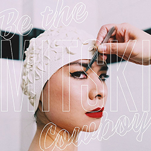
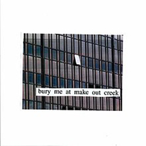
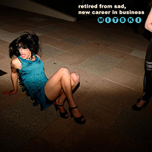

Laurel hell
(2022)
- ★ Love Me More
- ★ Valentine, Texas
- ★ There’s Nothing Left for You
- ★ Working for the Knife
- ★ Heat Lightning
- ★ Stay Soft
- ★ The Only Heartbreaker
- ★ I Guess
- ★ Everyone
- ★ That’s Our Lamp
- ★ Should’ve Been Me
This is where we fall
(2021)

- ★ The end
- ★ The beginning
- ★ The baddy man
Be the cowboy
(2018)

- ★ Pink in the Night
- ★ A Horse Named Cold Air
- ★ Old Friend
- ★ Nobody
- ★ A pearl
- ★ Washing Machine Heart
- ★ Blue Light
- ★ Lonesome Love
- ★ Remember My Name
- ★ Geyser
- ★ Come Into the Water
- ★ Me and My Husband
- ★ Two Slow Dancers
- ★ Why Didn’t You Stop Me?
Puberty 2
(2016)
- ★ Once More to See You
- ★ Happy
- ★ I bet on loosing dogs
- ★ My Body's Made of Crushed Little Stars
- ★ A Burning Hill
- ★ Thursday Girl
- ★ Dan the Dancer
- ★ Your Best American Girl
- ★ A Loving Feeling
- ★ Fireworks
- ★ Crack Baby
Mitski on Audiotree (live)
(2015)
- ★ Class of 2013
- ★ Liquid Smooth
- ★ I Don’t Smoke
- ★ Last Words of a Shooting Star
- ★ Pearl Diver
Bury Me at Makeout Creek
(2014)

- ★ Last Words of a Shooting Star
- ★ Jobless Monday
- ★ First Love / Late Spring
- ★ I will
- ★ Drunk Walk Home
- ★ I Don't Smoke
- ★ Carry Me Out
- ★ Francis Forever
- ★ Townie
- ★ Texas Reznikoff
Retried from sad, New Career in Business
(2013)

- ★ Shame (Jammin' Out Solo Version)
- ★ Circle
- ★ Shame
- ★ Goodbye, My Danish Sweetheart
- ★ I want you
- ★ Square
- ★ Humpty
- ★ Because Dreaming Costs Money, My Dear
- ★ Square (Solo Piano Version)
- ★ Class of 2013
- ★ Strawberry Blond
Lush
(2012)
- ★ Abbey
- ★ Wife
- ★ Door
- ★ Liquid Smooth
- ★ Bag of Bones
- ★ Brand New City
- ★ Eric
- ★ Real Men
- ★ Pearl Diver